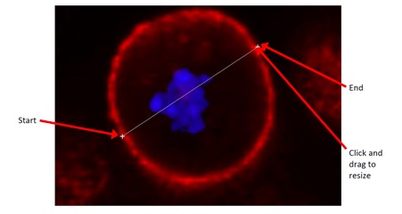
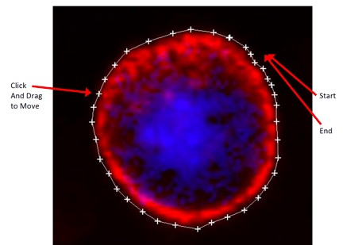
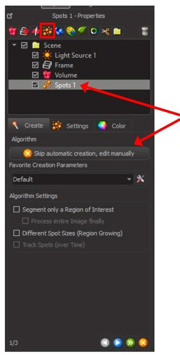
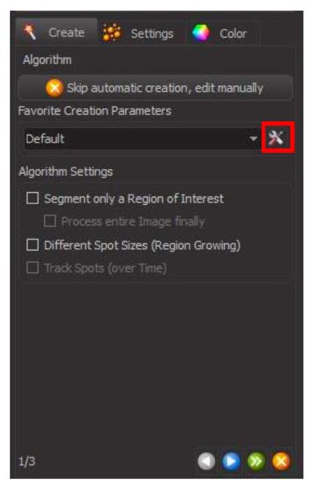

PART 5: GETTING STARTED WITH SELECTION AND ANALYSIS TOOLS
Basic Distance Measurements
A lot of the quantitation in Imaris requires you to select certain features in the image using the selection tools. However you can quickly and easily perform a 2D measurement for a distance between two points in your image, or a circumference, without the need for selection.
Switch your image into Slice view and scroll to the plane you want to measure. From the right hand side panel, select line (for distance) or polygon (for circumference) under tool type.
Click on the image at your starting point, then your secondary point for a line, or all points around the object to create a polygon. You can move points by clicking inside the box and dragging.


The distance of the line or polygon you have drawn will be displayed in the right hand side panel.
You can immediately draw another line on the image by clicking another location as your start point. Polygons will add to the existing line and therefore old lines must be deleted before drawing a new polygon. Delete a line or polygon with the Delete button on the panel.
This can be a quite laborious process so it is only recommended for a small number of measurements.
Spots Selection
To select objects in your images for counting and analysis you can use the Spots selection tool.
To begin selection click the Spots icon in the Selection and Analysis Tools panel.

This will add a layer to your Scene called “Spots 1” and open the Spots Creation Wizard at the bottom of the panel. The layer can be turned on and off in the scene by checking or unchecking the box beside it here.
In the first step of the Spots Creation Wizard, leave the creation parameters as default.
For particularly large images you can check the box to Segment only a Region of Interest in order to keep processing times down. Select the option to Process entire image finally to apply the selection to the whole image after selection.
Click on the blue arrow to proceed to the next step.
Use the green arrow to skip to the end and use automatic creation with the default parameters unchanged.
Use the orange cross to cancel the selection wizard at any point during creation.
In the next step of the Spots Creation Wizard, Select the channel you want to segment from the drop down list under Source Channel. It can often be helpful to turn off other channels in the image to see your channel of interest more clearly.
Change the Estimated XY Diameter to fit the objects you are selecting. You can usually get an idea of the size by comparing to the scale bar in the image.
For most Spot Selection you will leave PSF-elongation modelling unchecked, but select Background Subtraction.
Click on the blue arrow to proceed to the next step, or the green arrow to complete the selection without changing any other parameters.
In the third step of the Spots Creation Wizard use filters to remove any non-specific selections.
Choose the filter from the drop down menu and adjust the level with the Histogram.
You can move and rotate the image to check the selection throughout the entire 3D environment before applying the filter and completing selection.
To use more than one filter, adjust your first, then click + Add
and choose and adjust your second filter.
Click the green arrow to complete the selection.
The spots selection is now complete and all selected objects will be ‘marked’ by a sphere overlayed in the image.
The Spots Selection Wizard in the bottom left hand corner will now be replaced with a series of tabs which allow you to further edit the spots.
In the “Edit” tab you can select Spots within the image by switching the cursor to the selector and clicking on the spot. You can then recenter, duplicate or delete the spot.
Selecting the “Wand” tab will allow you to go back and rebuild the creation algorithm from the start if you are unhappy with the final results and cannot correct it using editing.
The "Graph" tab contains measurements for the selected spots.
From the drop down menu you can choose specific values or averages. Under specific values, you can futher select a measurement of interest.
Specific values will show you the value for each individual spot in the image, averages will show you all values averaged over the entire selection, as well as count.
You can extract these measurement values to an Excel spreadsheet. Use the Single Save button at the bottom to save only the currently displayed values. Or use the Multiple Save button to save all values. In the resulting explorer window select the location and name the file. The Excel sheet will open after saving.
Basic Tracking
Spots Creation can also be used on time series to track objects through time.
Begin the process as you did above, by selecting Spots from the Selection and Analysis Tools panel.
This time, the Spots Creation Wizard has recognised you are working on a time series. You may notice there are now 6 steps in the wizard instead of 3.
In the first step, Track Spots (over Time) will now show. Ensure this box is checked and set all other parameters as before.
As before, use the blue arrow to proceed to the next step, the green arrow to skip to the end and use automatic creation with the default parameters unchanged or the orange cross to cancel the selection wizard at any point during creation.
Steps 2 and 3 are used for initial detection of the spots and are identical to the previous spots selection, using channel, diameter and filters to select the objects in your image.
As with single images you can scroll through your time series and rotate and move in 3D at any point during selection to check your accuracy in space and time.
Once your objects have been selected, you can apply filters to the tracking over time.
In step 4 you can manually select spots (switch cursor to selection mode and click on the specific spot) to delete, duplicate or recenter, as previously in the post-selection editing.
This allows you to remove any detected object that you don’t want tracked (ie: cells that leave the field of view during tracking, etc).
In step 5 of the wizard, you can select the type of Tracking Algorithm to apply to the time series from the drop down menu. For most tracking Autoregressive Motion will work well to track movement.
You can also adjust the Tracking Parameters, including the Maximum Distance to track an object and the Maximum Gap Size (ie: how many frames to between an object disappearing and reappearing to allow linking the tracks together).
Proceed to the next step with the blue arrow or complete the selection without changing any other parameters with the green arrow.
In step 6 of the Spots Tracking Wizard, you can apply filters similar to step 3 of Spots Selection.
Here you can filter on properties such as Track Duration.
Select a filter from the drop down menu and use the Histogram to adjust. Add a new filter using the + Add button.
Complete the Spots Selection and Tracking using the green arrow.
Following selection and filtering, all detected objects will be overlayed in the image with Spots and a path of the track will be displayed, colour coded for time.
As with the basic Spots Selection tool, the panel in the bottom left hand corner will now be replaced with a series of tabs which allow you to further edit the spots and tracks. Spot Colour and Filters tabs are similar to Spot Selection.
The “Edit” tab now has the option to select Spots or Tracks for editing.
You can select a specific spot or track in the image or select a track in the editing tab.
Tracks can’t be deleted here, but you can select two shorter tracks that you have recognised as being from the same object and connect them, by selecting both and clicking Connect.
You can also spit a track that the wizard has detected as a single object, if it was in fact from 2 separate objects. Select the track and click Disconnect. Enter the point at which you want the track separated.
Under the “Graph” tab you will now find measurements for the tracks over time.
As with Spots, you can select Specific Values or Averages. Under Specific Values you can select measurements such as track length track duration.
You can save these measurements to Excel files as before.
Creating Surfaces
To select connected objects, surfaces or volumes in your images use the Surfaces selection tool.
To begin, choose Surfaces from the Selection and Analysis Tools panel.
As for spots, this will add a layer to your Scene called
“Surfaces 1” and open the Surfaces Creation Wizard at the bottom of the panel.
Step 1 of the Surfaces Creation Wizard is similar to Spots. Leave the creation parameters as default and check the box to Segment only a Region of Interest and Process entire image finally for large images
Click on the blue arrow to proceed to the next step or the green arrow to skip to the end and use automatic creation with the default parameters unchanged. Use the orange cross to cancel the selection wizard at any point during creation.
In step 2, Select your channel from the drop down menu and choose either Absolute Instensity or Subtract Background under Thresholding.
Click the blue arrow to proceed to the next step.
In step 3, use the Histogram to adjust the detection threshold until you have the optimal fit for your data.
The surface overlay should cover as much of your signal as possible with minimal excess noise detection.
Proceed tot eh next step with the blue arrow or complete the selection with the green arrow.
Finally, use filters to remove any non-specific selections.
Select the filter from the drop down menu and adjust the parameters in the Histogram.
Add new filters using the + Add button.
Complete the selection process by clicking on the green arrow.
You should now see a surface render overlaying the signal in your image.
You can again change the colour of your Surfaces or apply new filters using the tabs in the bottom left hand panel.
Under the “Edit” tab you now have options to cut surfaces, along with duplicating and deleting, as for spots.
To edit a surface, switch the cursor to selection mode and click on the surface you want to edit, followed by clicking your desired function in the tab.
To use the “scissors” to cut a surface, first navigate the image to the orientation that best shows the join you want to cut. Switch the cursor to section and hold shift then click on the join. A line will appear across the surface. If you are unhappy with the orientation or position, click on Clear Scissor and adjust the image orientation and try again.
When you are happy with the line position, click on Cut Surface to separate the two parts of the surface object.
You can find measurements for the selected surfaces under the “Graph” tab. As with Spots, you can select Specific Values or Averages. Under Specific Values you can select measurements such as area, intensity and volume of the surfaces.
Again you can save these measurements to Excel files using the same methods as Spots and Tracking.
Saving and Reusing Selection Criteria
Often we need to use the same selection criteria throughout our analysis to maintain consistency and prevent bias in our results. This can easily be done by saving and reusing our initial selection algorithms.
To save your selection algorithm generate your selection with optimal parameters. After finishing selection go to the “Wand” or rebuilding tab and click on Store Parameters for Batch.
In the popup window, give your parameters a name and select the storage location in either your Arena workspace or under the general use Favourite Creation Parameters. Click OK to save.
To reuse saved parameters, select the tools button under Favourite Creation Parameters in step 1 of any creation wizard.
Select the stored parameters that you want to use and click OK.

If you stored your parameters under Favourite Creation Parameters when saving, they may also be found in the Favourite Creation Parameters drop down menu.